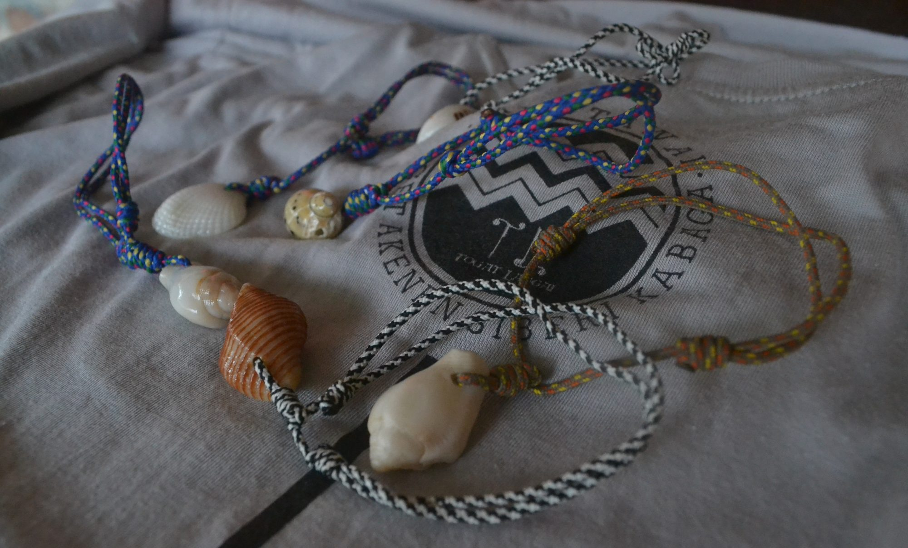

Gelang Letcu

Gelang letcu adalah salah satu kerajinan anyaman unik dari Mentawai. Kerajinan tangan ini terbuat dari
perpaduan rotan dan pakis hutan yang dianyam menjadi gelang. Sebenarnya, anyaman ini awalnya bukan berfungsi
sebagai aksesoris, melainkan sebagai pengikat anak panah. Namun saat ini, gelang letcu lebih dikenal sebagai
aksesoris dan banyak pula wisatawan yang suka dengan kerajinan tangan khas Mentawai ini. Gelang letcu juga
mulai dipasarkan di daerah Indonesia yang cukup banyak tempat wisata, seperti Yogyakarta dan Bali.